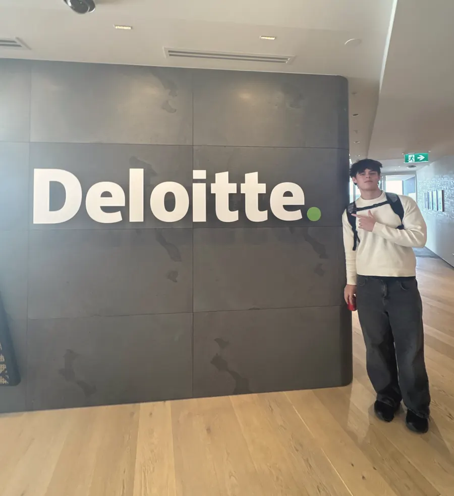

A Day at the Big Four
KPMG, Deloitte, PwC and EY in one day. Here is what I actually took from it.
Yesterday I visited Garmin. Today we did four of the biggest professional services firms in the world back to back. By the end of the day I had been up and down more floors than I care to count and came away with some merchandise, a full stomach and a lot to think about.
I will be honest: most of what these firms do is not directly related to software engineering. But as someone who wants to sit where technology meets business, a day like this is exactly the kind of exposure I need. Solutions architecture is not just a technical role. It is a client-facing, commercially aware role, and spending a day with some of the most commercially focused organisations in the country was more relevant than it might look on the surface.
I would also like to thank the AUT Careers team for organising the day. It was a great opportunity to see how these firms operate and get a feel for the culture.
A side note: I cannot recall all the details and names of the people I met, so if I have misrepresented anything, I apologise in advance.
KPMG
We kicked off the morning at KPMG and the energy in the room was set immediately. They had a range of speakers covering different parts of the firm. The one that stuck with me most talked about agriculture and international business, specifically exporting from Māori communities. What made it land was that he had not planned to end up at KPMG. He had spent most of his career in food. That theme of people finding their way into unexpected places came up again and again throughout the day and I found it genuinely reassuring.
KPMG also had a clear commitment to Māori and Pasifika wellbeing, which was good to see reflected in how they talked about the firm and not just in a brochure. The visit was more seminar style than the others, so there was less chance to ask questions and have real conversations, which was a bit of a shame. But the tone they set for the day was great and I left with a good sense of what they do and how they operate.
Deloitte

Moving on to Deloitte, the office was really nice and the atmosphere felt homely and relaxed. What came through clearly was how much flexibility exists in the role. One person I spoke to works from home most of the time, which is not what you picture when you think of a Big Four firm. Another had moved between different service lines over his career, travelling internationally along the way. The message was consistent: these firms are not rigid. If you are good and you communicate what you want, there is room to move.
Their commitment to Māori and Pasifika representation came up strongly here too. It did not feel performative, and the people talking about it seemed to genuinely care about seeing more of us in these spaces.
PwC
PwC was the most prepared. They had set up stations around the office covering different parts of the firm, which made it feel more structured and interactive than the others. We had a quiz, a VR station and got to sit down with people at different career stages and ask real questions. I learned that more than 3,000 people applied for their internship and graduate roles last cycle, with fewer than 15 positions available. That number puts things in perspective and shows how competitive these firms are.
The conversations I had there were practical. People talked about what the internship process actually looks like, what they look for and how most of the people in the room had done internships elsewhere before landing at PwC. The firm has a weight to it, you can feel it. The people I spoke to were approachable and willing to share their experiences, which made it a really valuable part of the day.
EY
EY was the last stop and by that point the day was catching up with everyone, but the people there were easy to talk to and genuinely interesting. One person had started out studying dentistry, switched to business and ended up at EY.
Another theme that kept coming up was how supportive the firms are when people want to change direction internally. EY seemed to embody that particularly well, with a structured mentorship programme for interns and a clear message that changing service lines is something they actively support.
What I actually took from the day
A few things stood out across all four firms. Everyone was nicer than I expected. The image of a high pressure, hierarchical professional services firm does not match the people I met. These firms are putting real effort into Māori and Pasifika recruitment and do not expect us to fit a certain mould. It was reassuring to hear from almost all of them that extracurricular activities and people skills are just as important as technical skills, if not more.
Flexible working is the norm, not the exception, and almost nobody ended up where they expected to when they started. That last one mattered to me. I am a second-year comp sci student who wants to work in solutions architecture. I definitely do not have everything figured out, and hearing that from people at the top of their fields in some of the most competitive firms in the world was more useful than anything I could have read in a careers guide.
I am glad I went and I would certainly do it again. If you get the chance to do something like this, do not overthink it. One thing I am trying to do is take more opportunities, no matter how uncomfortable or out of reach they seem. Just show up.